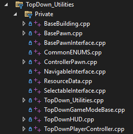
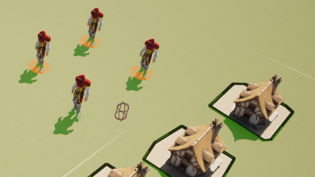
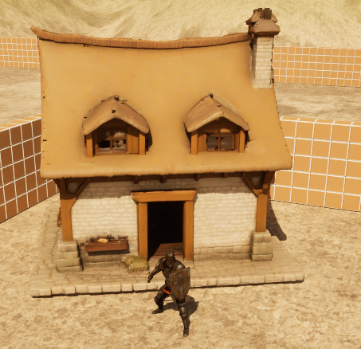
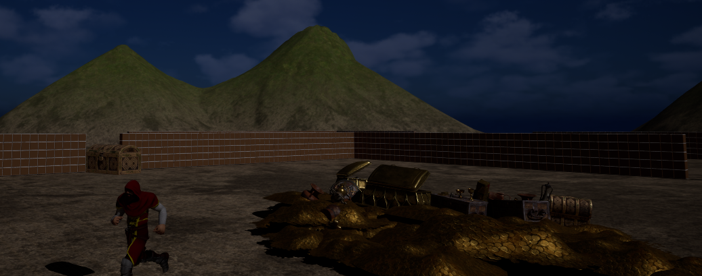
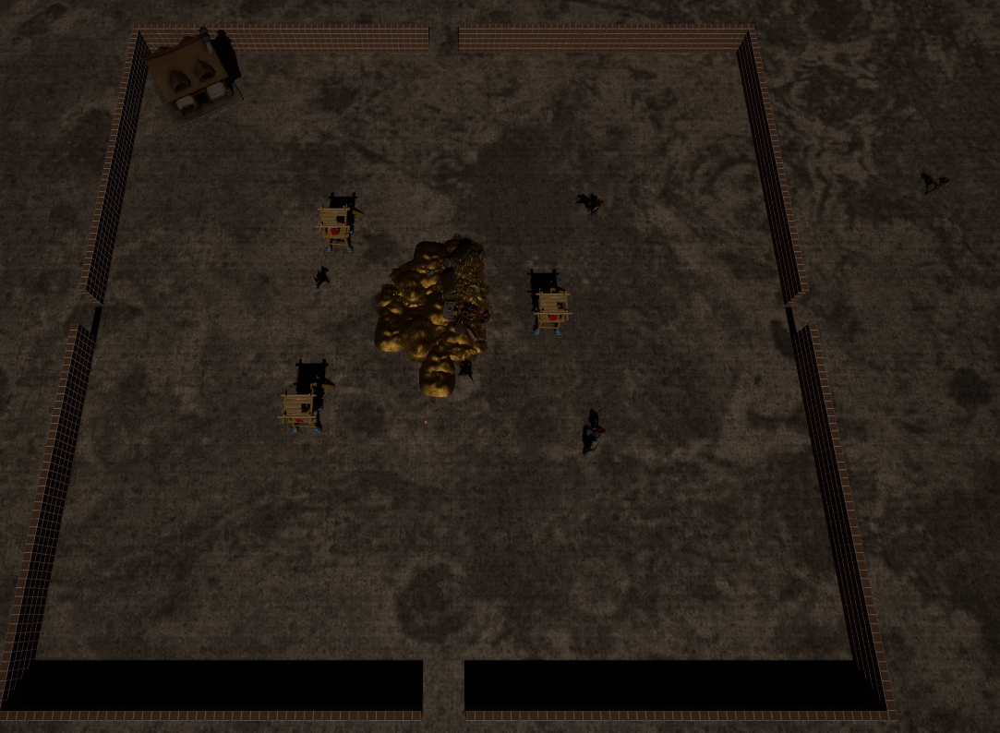
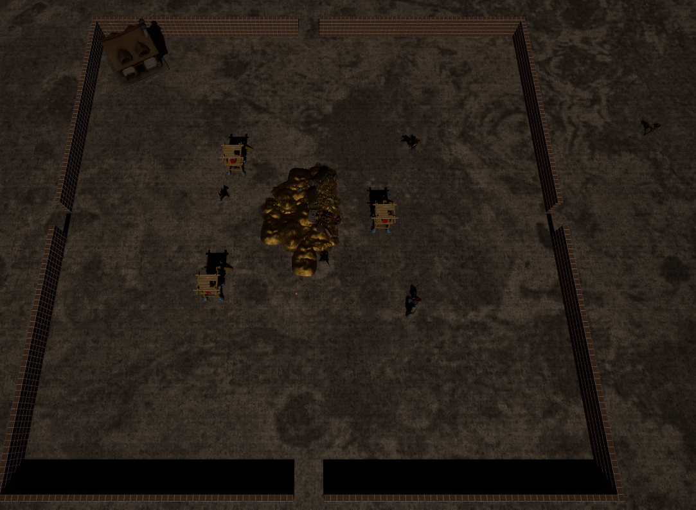

Project Details
Top-Down Utilities Plugin
I begun this project by creating a reusable plugin for top0-down games. As someone with a great interest in strategy games,
I intend to make more of them in the future so making a plugin containing many basic RTS elements was a very obvious choice.
It contains all the basic controls needed inclduing camera movement, unit and building selection, unit movement,
base classes for units and buildings, and a modifiable resource table. This plugin is designed to be very easy to drop
into other projects by being generic but still expandable for other use cases. Any building or unit can inherit the base classes
and be easily expanded with any needed functionality.


Game Features
This game includes three main features for defending your base:
- Building archer towers which shoot at nearby enemies. These can only be built in the inner portion of the base and will
change colour tho show valid building locations
- Training warriors which will taunt and fight approaching enemies. These can be controlled like a normal RTS unit by
selecting them with a click or a box-select and then right-clicking to move.
- Placing bricks to modify the paths the enemies can take. The bricks are stored using Unreal Engine's hierarchical
instanced static mesh system along with additional maps for grid cooardinates to ensure they do not affect performance.


Main Game Loop
The main game loop involves building your defences during the day and then defending your base from enemies at night.
Each night, enemies get stronger and more numerous. Defeating them gives you more gold to build more defences.
The goal of the enemies is to get to the gold in the middle of your base, steal it, and take it back with them. Your gold
also acts as your health so if you run out completely then you lose.



 
